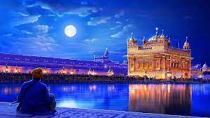
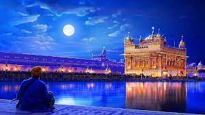

About Golden Temple
The Golden temple is located in the holy city of the Sikhs, Amritsar. The Golden temple is famous for its full golden dome, it is one of the most sacred pilgrim spots for Sikhs. The Mandir is built on a 67-ft square of marble and is a two storied structure. Maharaja Ranjit Singh had the upper half of the building built with approximately 400 kg of gold leaf. The Golden Temple is surrounded by a number of other famous temples like the Durgiana Temple. The fourth Guru of Sikhs, Guru Ram Das, who had initially constructed a pool here, founded Amritsar, which houses the Golden Temple or Harmandir Sahib. It is here that Sage Valmiki wrote the epic, Ramayana. Rama and Sita are believed to have spent their fourteen-year exile in Amritsar, the epicenter of Sikhism. To the south of the temple is a garden, and the tower of Baba Atal. The Central Sikh Museum is atop the Clock Tower.
The Golden Temple is the most celebrated monument in Amritsar, known as much for its spiritual significance as for its architectural beauty. Also called Harmandir Sahib or Darbar Sahib, this gurudwara stands as the holiest pilgrimage site of Sikhism and a prime tourist attraction in India. If Amritsar is the next place on your bucket list, make sure to include this spectacular place of worship in your itinerary. Being located in the heart of the city, it can be easily reached from your hotels in Amritsar.
There’s no doubt that today, the Golden Temple stands as one of the top tourist places to visit in Amritsar. Scores of people visit the temple daily to experience its spiritual aura, tranquillity, and architectural beauty. The annual festival of Vaisakhi is celebrated with much pomp and glory at the Golden Temple every year. Apart from this, the birthday of Guru Nanak, the martyrdom day of Guru Teg Bahadur, and the birthday of Guru Ram Das are also celebrated with much fervor at the temple. During Diwali, the Golden Temple is spectacularly illuminated with earthen lamps or diyas.
To fill the Trip Booking Form Click Here.
For more detailed information, you can visit Wikipedia.